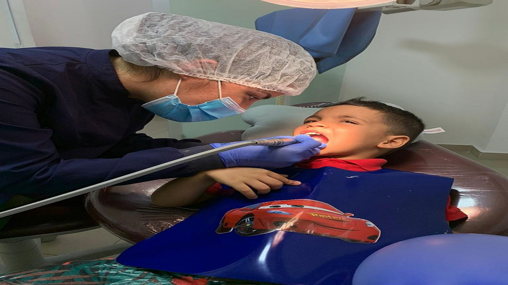

Ao deixar de lado a higiene da boca, há, naturalmente, um acúmulo das bactérias nessa área. Com o tempo, elas se proliferam e chegam a quantidades absurdas, prejudicando o estado dos dentes e causando problemas na gengiva.
Cuidar da saúde da boca é mais simples do que parece. Basta fazer uma boa escovação com os produtos corretos, ir ao dentista regularmente e corrigir alguns maus hábitos, como: Esquecer de escovar os dentes, não passar fio dental,comer muitos doces, fumar e consumir álcool.
Ao consultar um dentista, serão examinadas todas as estruturas bucais (dentes, gengiva, língua, bochechas).
É recomendado que o uso do fio dental seja diário, 1 a 2 vezes por dia, no entanto o ideal é que seja usado após todas as refeições principais.
Last updated 3 mins ago
O uso do fio dental é importante para remover restos de alimentos que não conseguiram ser removidos por meio da escovação normal, ajudando a evitar a formação de placas bacterianas e tártaros e diminuindo o risco de cáries e inflamação da gengiva..
Para evitar o desenvolvimento de cáries e da placa bacteriana nos dentes é fundamental escovar os dentes pelo menos 2 vezes ao dia, sendo que uma delas deve ser sempre antes de dormir, pois durante a noite há maior chance das bactérias se acumularem na boca.
Last updated 3 mins ago
Que tipo de escova dental devo usar? A maioria dos dentistas concorda que a escova dental de cerdas macias é a melhor para a remoção da placa bacteriana e dos resíduos de alimentos.
Last updated 3 mins ago
Segundo a Organização Mundial da Saúde (OMS), a saúde bucal é importantíssima. Pois se deixada de lado, fungos e bactérias podem se proliferar e acabar por atingindo outros órgãos e suas funções, trazendo doenças sérias. Assim, incluir ações simples na rotina é a forma ideal para manter uma boa saúde bucal. Controlar a ingestão de alimentos doces é uma das opções. Além disso, é preciso escovar os dentes todos os dias, após cada refeição e também uma última vez antes de dormir. É importante também utilizar uma escova de dente de tamanho adequado e com cerdas macias, além de creme dental com flúor.